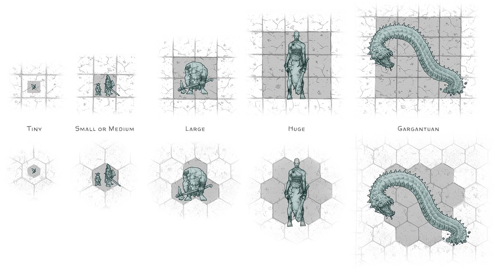
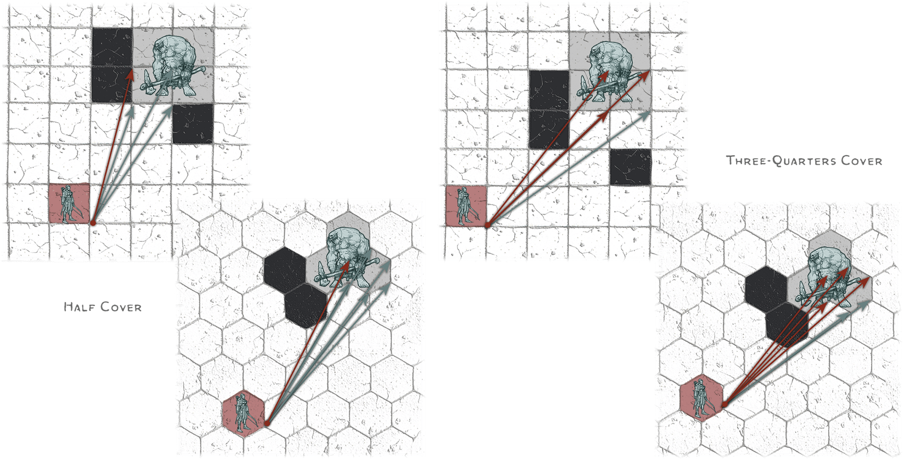

Chapter 2: Running the Game#
Building on the basics laid out in chapter 1, this chapter goes into more depth on running a D&D game as Dungeon Master.
Know Your Players#
While your players' role is to create characters (the protagonists of the campaign), breathe life into them, and steer the campaign through their actions, your role as Dungeon Master is to keep the players immersed in the world you've created and to give the characters the opportunity to do awesome things.
Knowing what your players enjoy most about the D&D game helps you create and run adventures that they will enjoy and remember. Once you know which of the following activities each player in your group enjoys, you can tailor adventures to your players' preferences.
It's rare to gather a table of players who all enjoy the same aspects of the game. The trick is to find a balance so everyone can get some enjoyment out of each game session, even if certain encounters don't match their preferences. At best, a group of players is a lot like their characters, in that having different interests and capabilities enables them to handle a broad range of challenges.
Acting#
Players who enjoy acting like to embody their characters' personalities, perspectives, and attitudes. They might like dressing up or using their characters' voices while playing. They enjoy social interactions with NPCs, monsters, and their fellow party members.
Engage players who like acting by...
- Giving them opportunities to develop their characters' personalities and backgrounds.
- Allowing them to interact regularly with NPCs.
- Highlighting the roleplaying elements of combat encounters.
- Incorporating elements from their characters' backstories into your adventures.
Exploring#
Players who desire exploration want to experience the wonders that a fantasy world has to offer. They want to know what's around the next corner or hill and like to find hidden clues and treasure.
Engage players who like exploration by...
- Dropping clues that hint at things yet to come.
- Letting them find things when they take the time to explore.
- Providing evocative descriptions of exciting environments and using interesting maps and props.
- Giving monsters secrets for the players to uncover or cultural details for them to learn.
Fighting#
Players who enjoy fantasy combat like the excitement of battling villains and monsters. They thrive in situations that can best be resolved in combat, favoring bold action over negotiation or investigation.
Engage players who like fighting by...
- Springing unexpected combat encounters.
- Vividly describing the havoc their characters wreak with their attacks and spells.
- Including combat encounters with large numbers of less powerful monsters.
Instigating#
Players who like to instigate action are eager to make things happen, even if that means taking perilous risks. They would rather rush headlong into danger and face the consequences than cautiously plan their actions.
Engage players who like to instigate by...
- Allowing their actions to affect the environment.
- Including things in your adventures to tempt them.
- Letting their actions put the characters in a tight spot.
- Including encounters with NPCs who are as feisty and unpredictable as the players are.
Optimizing#
Players who enjoy optimizing their characters' capabilities like to fine-tune their characters for peak performance by gaining levels, new features, and magic items. They welcome any opportunity to demonstrate their characters' excellence.
Engage players who like optimization by...
- Using desired magic items as adventure hooks and rewards.
- Including encounters that let them leverage their characters' most potent abilities.
- Providing quantifiable rewards, like Experience Points, for noncombat encounters.
Problem-Solving#
Players who want to solve problems like to scrutinize NPC motivations, untangle a villain's machinations, solve puzzles, and come up with plans.
Engage players who like to solve problems by...
- Including puzzles and tricky situations that require thinking.
- Rewarding planning and tactics with in-game benefits.
- Creating NPCs with complex motives.
Socializing#
Many groups include players who come to the game primarily because they enjoy the social event and want to spend time with their friends, not because they're especially invested in any part of the actual game. These players want to participate, but they tend not to care whether they're deeply immersed in the adventure, and they don't tend to be assertive or very involved in the details of the game, rules, or story. As a rule, don't try to force these players to be more involved than they want to be.
Storytelling#
Players who love storytelling want to contribute to a narrative. They like it when their characters are heavily involved in an unfolding story, and they enjoy encounters that are tied to and expand an overarching plot.
Engage players who like storytelling by...
- Using their characters' backstories to shape the stories of the campaign.
- Making sure encounters advance the story.
- Making their characters' actions steer future events.
- Giving NPCs characteristics and connections that the adventurers can explore to uncover new adventure opportunities.
- Including plot elements that call back to decisions the adventurers made earlier.
Group Size#
D&D's rules and published adventures generally assume four to six players plus the DM. The following advice helps you adjust adventures to work for smaller or larger groups.
Small Groups#
A group that contains fewer than four players might find combat encounters difficult, especially if the party lacks important capabilities (such as armored characters to stand toe-to-toe with enemies or healing magic to keep everyone alive). You can compensate by reducing the number of monsters in a combat encounter or by giving the party resources they need, such as Potions of Healing.
You can also add party members, as described in the sections that follow.
DM-Controlled Adventurer#
You can make an adventurer character of your own (sometimes called a "DM PC"—a "Dungeon Master player character") to accompany the party. This is a rewarding way for you to roleplay with your friends while they're exploring your world, but keep in mind that you'll have to run this NPC in combat.
Be sure to keep the players' characters in the spotlight, and don't take away the players' agency by having your character make decisions for the group.
NPC Party Members#
You can add nonplayer characters (NPCs) to the adventuring party. Use the NPC stat blocks in the Monster Manual to represent these supporting characters. If you don't want to run these NPCs yourself, invite one or more of your players to take on an NPC as a secondary character. These NPCs might be apprentices or employees of the adventurers, so it's natural for the main characters to take the lead in exploration and social interactions while the NPCs fade into the background.
See "Nonplayer Characters" in chapter 3 for more information.
Players with Multiple Characters#
One or more of your players can each play two characters. Running two characters at once is a challenge, so make sure those players are comfortable taking on multiple characters.
This approach works best in a game that's focused on combat, since it fills out a party with combat-capable characters. It can be difficult for a player to roleplay two characters at once. You might suggest that the player focus on roleplaying one character while relegating the other character to a supporting role.
Large Groups#
The biggest considerations with large groups are maintaining order at the table and keeping combat from becoming too slow.
Structured Turns#
If you find yourself in a situation where individual players are having trouble getting a chance to do things during exploration or social interaction, have the characters roll Initiative and act in Initiative order, just as you do in combat. Taking turns ensures that everyone has the chance to do something. Use this approach sparingly, as it can feel artificial and sometimes slows down the game.
Party Leader#
Consider having the players designate a party leader, who is then the only person who tells you what the group is doing. It becomes the leader's role to work with the rest of the players to find consensus on what the group will do.
Speeding Combat#
Players who have to wait a long time between their characters' turns in combat are susceptible to distraction. Consider these tips to speed combat with a large group.
Be Generous with Information. If you tell the players what the Armor Class of their opponents is, you reduce the steps of interaction needed to resolve an attack. Instead of telling you a number and asking if it hits, a player can simply tell you that an attack hits and how much damage it deals, perhaps adding some narration for good measure (see "Narration in Combat" later in this chapter). In the same way, if you know each character's AC, you don't need to ask whether a monster's attack hits.
Help Players Keep Up. If a player isn't sure what to do on their turn in combat, help the player decide by offering a quick recap of the state of the battle. How many foes are still standing, and how hurt do they look? What's the most immediate threat to that character?
Make Initiative Obvious. Display the Initiative order to your players so they each know when their character's turn is coming up and can think ahead about what their character will do on their next turn. Using Initiative scores (see "Running Combat" in this chapter)—and perhaps seating the players in Initiative order—can be helpful with a large group.
Roll Handfuls of Dice. Encourage players to roll the dice for their attack rolls and their damage at the same time. You can do the same.
Absent Players#
When one of your players is absent, what do you do with that player's character? Consider the following options:
Fading into the Background. Have the character simply fade into the background. This requires everyone to step out of the game world a bit and suspend disbelief, but it might be the easiest solution. Act as if the character were absent, but don't try to come up with any in-game explanation. Monsters don't attack the character, who returns the favor. On returning, the player resumes playing as if the absence never happened.
Narrative Contrivance. Decide the character is elsewhere while the rest of the party continues the adventure. Come up with in-game reasons for the character to temporarily leave the party and rejoin later, such as following up on a rumor or reporting back to the party's patron.
Substitute Player. With the absent player's consent, have another player run the missing player's character, or run the character yourself if you feel you can do so. Whoever runs the character will need a copy of that character's character sheet and should strive to keep the character alive and use that character's resources wisely.
Give absent characters the same XP that the other characters earned each session, keeping the group at the same level.
Some groups like to work out a policy regarding how many missing players is too many to proceed. For example, your group might play as long as no more than one person is absent. If two or more people can't attend a session, consider playing a short adventure with different characters, and perhaps a different Dungeon Master, or bring out a favorite board game.
Incorporating New Players#
When introducing a new player to the group, revisit the group's expectations and limits (see "Ensuring Fun for All" in chapter 1). Then have the new player create a character who is the same level as the other characters in the adventuring party.
If the new player has never played D&D before and the rest of the group is higher than level 4, consider taking a short break from the campaign and having everyone play a new level 1 character for a session or two while the new player learns the ropes. (This can also be a good opportunity for another player to take a turn as DM.)
If you're incorporating a new character into the group in the middle of an adventure, work with that character's player to come up with a story hook for how their character joins the group, and make sure the player is happy with the choice. Suggested story hooks include the following:
Long-Lost Friend. The new character is a friend or relative of one of the adventurers. Alternatively, the new character is connected to the adventurers' patron or a member of an organization the other characters are linked to. In either case, the new character has been searching for the group, perhaps bearing important news.
Rescued Prisoner. The new character is a prisoner of the foes the other characters are fighting. When rescued, this character joins their group.
Sole Survivor. The new character is the sole survivor of an ill-fated group of adventurers. The new character might be able to offer a clue to help the party avoid the same grim fate that befell the other group.
Special Guest Stars#
The story hooks for incorporating new players can also work for occasions when you want to bring a player into the group for a single session. For example, you might have a friend visiting from out of town who wants to join your game briefly. Or perhaps you have a player you're thinking about adding to the group, but you want to make sure they'll be a good addition. Incorporating an occasional guest player is also a great way to maintain a roster of players as backup in case one of your regular players has to drop out of the game.
Multiple DMs#
Many gaming groups switch DMs from time to time. The following sections describe situations that allow for multiple DMs and ways multiple DMs can add to the group's fun.
Occasional Breaks#
Take a break from being the DM if you need to recharge your creative juices, plan out the next arc of your campaign, or finish up the adventure you're working on. By taking a break, you create an opportunity for another player to assume the DM role for a session or two.
If not everyone can make it to a scheduled session, that can also be an opportunity for a different DM to run a short adventure.
Variety Series#
Some groups don't want a long campaign with sweeping plotlines; they prefer short, unconnected adventures. With that style of game, different players might take turns as DM for one to three sessions at a time, with each adventure standing as a self-contained story.
Concurrent Campaigns#
You and the other DMs in your group can take turns running adventures for a few weeks or months at a time, with your campaign on hold during another DM's turn. Some groups play multiple times each week, with different DMs running their campaigns on different days.
Shared World#
Some groups take a large, established campaign setting and divide it up geographically so different DMs can run separate campaigns in the same setting. In theory, characters can travel from one DM's region of the world to another's, creating continuity in the campaign even as characters might be involved in several plotlines.
Rather than dividing a campaign geographically, you and the other DMs in your group could divide it thematically. Using the setting in chapter 5 of this book as an example, each DM could focus their campaign on one of the three overarching conflicts of that setting. This approach allows the same group of adventurers to sink their teeth into all three overarching conflicts while ensuring that each storyline feels distinct.
Joint DMs#
Two or more DMs can share the creation of a single campaign, working together to maintain continuity from session to session and making sure that each DM's adventures advance the larger story of the world and the characters. When players who are also DMs are playing their characters, they shouldn't let their knowledge of the campaign's story influence their characters' actions. Those characters step out of the action when their players take their turns as DM.
Joint DMs can also team up to run each session of a campaign, with each DM focusing on the aspects of the game they most enjoy or the DMs trading focus from session to session. One DM might run combat description and keep a battle moving while the other focuses on miniatures and music. The two DMs can play two different NPCs in a social interaction encounter. Between sessions, they can collaborate or divide up world-building, encounter creation, and other tasks.
Narration#
Using a few time-honored narrative techniques, you can immerse your players in your world and bring the game to life.
Lead by Example#
When you roleplay and narrate with enthusiasm, you add energy to the game and draw your players into the world. Encourage the players to describe their characters' actions, then incorporate their narration into your accounts of the characters' successes and failures.
Brevity#
Keep your descriptions short and evocative. Focus on the more important information to keep players' interest and to highlight important clues and details. Players need to know about significant features their characters can perceive—especially things like monsters in a room—before they decide what to do. Allow your players to ask follow-up questions, and provide additional description as needed.
Atmosphere#
Bring a place to life by adding touches of atmosphere, such as a lingering smell of ash, tiny beetles skittering along the dungeon floor, or blue flowers blossoming in the otherwise desolate and gloomy graveyard. Pick a couple of senses (sight, hearing, smell, touch, or taste) to highlight.
Describe changes in the environment to direct your players' attention. For example, a bird alighting on a gravestone might draw the characters' attention to it.
Draw Players' Attention#
Good narration invites the players to examine details of the environment that lead to encounters or important information. Anything you describe with extra, subtle details draws the players' attention. Give them just enough to invite further exploration, but don't create the equivalent of a flashing neon sign reading "This way to adventure!"
When using narration to guide your players, keep the following in mind:
Distinguish Options. When presenting options to players, add details to distinguish the options. Should the characters take the left path or the right path? Perhaps the left path smells of rot and decay, while the faint sound of lapping water comes from the right. These details give players more information to make an informed decision without explicitly telling them where to go.
Don't Limit Options. In general, let the players use the information they're given to decide what they want to do. Don't put unnecessary limitations on the characters' actions. That said, it can be helpful (especially with new players) to offer suggestions: "You can go through the door, search the chest, or look down the shaft." Just make sure to finish by saying, "or anything else you can think of!"
Don't Assume Character Actions. Don't assume actions on the characters' part. For example, don't say "You step into the room and look up" unless the player has already told you that's what their character is doing.
Secrets and Discovery#
In the course of an adventure, the players and their characters will uncover information that was previously unknown to them. Make sure the information they need to complete the adventure is obtainable.
Don't hide important secrets or discoveries in places where the characters aren't likely to uncover them. Make sure they can't miss an important secret or discovery simply by failing an ability check, not talking to the right person, or not looking in the right place.
See also "Perception" in this chapter for more advice on hidden secrets in adventures.
Giving Information to One Player#
When one character separates from the rest of the group, it's usually OK to let the rest of the players know what happens, assuming the separated character will update the rest of the party when they're reunited. You might need to remind the other players that their characters aren't present, so they can't offer advice or information to the lone character.
Sometimes, though, you'll want to give information to just one player. It might be information you think the character won't want to share with the rest of the party, perhaps something related to elements of the character's history that are still secret. In this case, you can use one of these methods to deliver that information:
Aside to Player. Pull the player into another room, or have the other players leave the room. This approach is best if there's a whole scene that plays out with just one character involved. Try to keep these scenes brief so other players don't get bored or feel left out.
Secret Message. If you just have a simple piece of information to convey, you can whisper to the player, pass a note to them, or send them a text or a direct message.
Resolving Outcomes#
You decide when a player makes a D20 Test based on what the character is trying to do. Players shouldn't just roll ability checks without context; they should tell you what their characters are trying to achieve, and make ability checks only if you ask them to.
When a situation comes up and you're not sure how to adjudicate it using the rules, use these four questions to help you decide:
Is a D20 Test Warranted? If the task is trivial or impossible, don't bother with a D20 Test. A character can move across an empty room or drink from a flask without making a Dexterity check, whereas no lucky die roll will allow a character with an ordinary bow to hit the moon with an arrow. Call for a D20 Test only if there's a chance of both success and failure and if there are meaningful consequences for failure.
What Kind of D20 Test? If a character is actively trying to do something, use an ability check (or an attack roll if the character is trying to hit something). If the character is reactively trying to avoid or resist something, use a saving throw.
Which Ability Does the Test Use? Think about which ability has the most influence on a character's chance to succeed on the ability check or saving throw. Refer to the Abilities, Ability Checks, and Saving Throws table for guidance. Also consider whether a skill or tool proficiency might apply to an ability check.
What's the DC? Based on how hard you think the task should be, set the DC as follows: 10 for an easy task, 15 for a moderately difficult task, or 20 for a hard task.
The sections that follow offer advice on how to use each kind of D20 Test, when to apply Advantage and Disadvantage, and how to decide what the consequences of success or failure might be.
Abilities, Ability Checks, and Saving Throws#
| Ability | Score Measures... | Make an Ability Check To... | Make a Saving Throw To... |
|---|---|---|---|
| Strength | Physical might | Lift, push, pull, or break something | Physically resist direct force |
| Dexterity | Agility, reflexes, balance | Move nimbly, quickly, or quietly | Dodge out of harm's way |
| Constitution | Health and stamina | Push your body beyond normal limits | Endure a toxic hazard |
| Intelligence | Reasoning and memory | Reason or remember | Recognize an illusion as fake |
| Wisdom | Perceptiveness and mental fortitude | Notice things in the environment or in creatures' behavior | Resist a mental assault |
| Charisma | Confidence, poise, and charm | Influence, entertain, or deceive | Assert your identity |
Ability Checks#
An ability check is a test to see whether a character succeeds at a task the character has decided to attempt. The Abilities, Ability Checks, and Saving Throws table summarizes what each ability is used for. (Constitution checks are rare, as tests of a character's endurance are usually passive or reactive, making a saving throw more appropriate.)
Proficiency#
When the rules or a published adventure calls for an ability check, a skill or tool proficiency is often called out: for example, "a character who succeeds on a DC 15 Intelligence (Arcana) check can puzzle out the magic involved." Sometimes the rules allow for any one of two or more proficiencies to apply to a check. When deciding what check a character should make, be generous in determining if the character's Proficiency Bonus comes into play. You might specifically ask for an Intelligence (Arcana) check, or you can ask for an Intelligence check and let the player negotiate with you to see if one of the character's skill or tool proficiencies applies.
Trying Again#
Sometimes a character fails an ability check and the player wants to try again. In many cases, failing an ability check makes it impossible to attempt the same thing again. For some tasks, however, the only consequence of failure is the time it takes to attempt the task again. For example, failing a Dexterity check to pick a lock on a treasure chest doesn't mean the character can't try again, but each attempt might take a minute.
If failure has no consequences and a character can try and try again, you can skip the ability check and just tell the player how long the task takes. Alternatively, you can call for a single ability check and use the result to determine how long it takes for the character to complete the task.
Group Checks#
Group checks are a tool you can use when the party is trying to accomplish something together and the most skilled characters can cover for characters who are less adept at the task. To make a group ability check, everyone in the group makes the ability check. If at least half the group succeeds, the whole group succeeds. Otherwise, the group fails.
Group checks aren't appropriate when one character's failure would spell disaster for the whole party, such as if the characters are creeping across a castle courtyard while trying not to alert the guards. In that case, one noisy character will draw the guards' attention, and there's not much that stealthier characters can do about it, so relying on individual checks makes more sense. Similarly, don't use a group check when a single successful check is sufficient, as is the case when finding a hidden compartment with a Wisdom (Perception) check.
Consider using group checks in situations such as the following:
Research Tasks. The characters are trying to learn about an ancient prophecy from an archive. The characters can make a group Intelligence (Investigation) check to find sources in the archive; characters who are knowledgeable about such topics and about research methods in general can tell the other characters the most likely places to direct their search. If the group check is successful, the characters find enough different sources to paint a clear picture of the prophecy; otherwise, their information is incomplete.
Roped Together. The characters are tied together as they scale a cliff or cross a rickety rope bridge. If one or two characters fail their checks, the successful characters can stop their fall and prevent disaster, but if more than half the party fails, the whole group falls. You could also apply this idea to something like a long swim, where strong swimmers can help weaker ones.
Social Situations. One character offends someone at a diplomatic event, and a noble demands the adventurers be escorted from the premises. The characters can make a group Charisma (Persuasion) check to avoid getting thrown out; they just need a few convincing arguments and the ability to smooth over any gaffes. You could apply this same principle to other Charisma checks using Deception, Intimidation, or Performance.
Passive Checks#
Ability checks normally represent a character's active effort to accomplish something, but occasionally you need a passive measure of how good a character is at doing a thing. Passive Perception is the most common example. (See "Perception" later in this chapter.) You can extend the concept of a passive ability check to other abilities and skills.
For example, if your game features a lot of social interaction, you can record each character's Passive Insight score, calculated in much the same way as Passive Perception: 10 plus all modifiers that normally apply to a Wisdom (Insight) check.
Attack Rolls#
In combat, an attack roll is used to determine whether an attack hits.
You can also use attack rolls to resolve noncombat activities that are similar to attacks in combat, such as an archery contest or a game of darts. Assign an Armor Class to the target, decide whether the character is proficient with the weapon used, then have the player make an attack roll. (See also "Degrees of Success" in this chapter.)
Saving Throws#
In contrast to an ability check, a saving throw is an instant response to an effect and is almost never made by choice. A saving throw makes the most sense when something bad threatens a character and the character has a chance to avoid or resist it.
Most of the time, a saving throw comes into play when an effect—such as a spell, monster ability, or trap—calls for it, telling you what kind of saving throw is involved and providing a DC for it.
In other situations that call for a saving throw, it's up to you to decide which ability score is involved. The Abilities, Ability Checks, and Saving Throws table offers suggestions.
Difficulty Class#
You establish the Difficulty Class for an ability check or a saving throw when a rule or an adventure doesn't give you one. Choose a DC from the Typical DCs table based on the task's difficulty.
Typical DCs#
| Task | DC |
|---|---|
| Very easy | 5 |
| Easy | 10 |
| Moderate | 15 |
| Hard | 20 |
| Very hard | 25 |
| Nearly impossible | 30 |
The task difficulties are explained below:
Very Easy. Most people can accomplish a DC 5 task with little chance of failure. Unless circumstances are unusual, let characters succeed at such a task without making a check.
Easy, Moderate, and Hard. These are the most common difficulties, and you can run your game using only them. A character with a 10 in the associated ability and no proficiency will succeed at an easy task around 50 percent of the time. For a moderate task, a character needs either a higher score or proficiency to have a similar chance of success, whereas a hard task typically requires both to have a similar chance. If you can't decide between two levels of difficulty, choose a DC somewhere in the middle, such as 17 or 18 for a task that is a little easier than "hard."
Very Hard and Nearly Impossible. A DC 25 task is almost out of reach for low-level characters, but more reasonable after level 10 or so. Low-level characters have no chance to accomplish a DC 30 task, while a level 20 character with proficiency and a relevant ability score of 20 still needs a 19 or 20 on the die roll to succeed at a task of this difficulty.
If you're setting the DC for a saving throw, don't go lower than 10 or higher than 20. If a creature is the source of the effect forcing a saving throw, use the standard formula for calculating a save DC (see "Calculated DCs" below).
Calculated DCs#
For some ability checks and most saving throws, the rules default to the following formula:
- DC = 8 + ability modifier + Proficiency Bonus
This formula often sets the saving throw DC when a creature is casting a spell or using a special ability, but it can also apply to ability checks that are contests between two creatures. For example, if one creature is holding a door shut, use its Strength modifier and Proficiency Bonus to set the DC for opening the door. When another creature tries to force the door open, the creature makes a Strength (Athletics) check against that DC.
Another way to handle similar situations is to have one creature's ability check set the DC for another creature's check. That's how hiding works, for example: a hiding creature's total Dexterity (Stealth) check sets the DC for Wisdom (Perception) checks made to find the hidden creature.
Advantage and Disadvantage#
Advantage and Disadvantage are among the most useful tools in your toolbox. They reflect temporary circumstances that might affect the chances of a character succeeding at a task. Advantage is also a great way to reward a player who shows exceptional creativity in play.
Characters often gain Advantage or Disadvantage through the use of special abilities, actions, spells, or other features of their classes or species. In other cases, you decide whether a circumstance would merit Advantage or Disadvantage.
As described in the Player's Handbook, if different circumstances would give both Advantage and Disadvantage in the same situation, the Advantage and Disadvantage cancel out, regardless of how many circumstances would grant Advantage or Disadvantage.
Advantage#
Consider granting Advantage when...
- Circumstances not related to a creature's own capabilities provide it with an edge.
- Some aspect of the environment improves the character's chance of success.
- A player shows exceptional creativity or cunning in attempting or describing a task.
- Previous actions (whether taken by the character making the attempt or some other creature) improve the chances of success.
Disadvantage#
Consider imposing Disadvantage when...
- Circumstances hinder success in some way.
- Some aspect of the environment makes success less likely.
- An element of the plan or description of an action makes success less likely.
Consequences#
As a DM, you can use a variety of approaches when adjudicating success and failure to tailor the game to your liking.
Success at a Cost#
When a character fails a D20 Test by only 1 or 2, you can offer to let the character succeed at the cost of a complication or hindrance. Such complications can run along any of the following lines:
- A character gets her sword past an enemy's defenses and turns a near miss into a hit, but she then drops the sword.
- A character narrowly escapes the full brunt of a Fireball spell but has the Prone condition.
- A character fails to intimidate a kobold prisoner, but the kobold reveals its secrets anyway while shrieking at the top of its lungs, alerting other nearby monsters.
By putting the choice of success at a cost in the players' hands, and even letting them choose the setbacks, you can give players more agency in crafting the story of their characters' deeds.
Degrees of Failure#
Sometimes a failed D20 Test has different consequences depending on the degree of failure. For example, a character who fails to disarm a trapped chest might accidentally spring the trap if the check fails by 5 or more, whereas a lesser failure means the trap wasn't triggered during the botched disarm attempt. Consider adding similar distinctions to other checks. Perhaps a failed Charisma (Persuasion) check means a queen won't help, whereas a failure of 5 or more means she throws the character in the dungeon for such a display of impudence.
Degrees of Success#
A successful D20 Test can have degrees of success. For example, when characters participate in an archery contest, you might decide that the more an attack roll exceeds the target's AC, the higher the character's score. The archery target might have AC 11, but it has five concentric rings indicating degrees of success. So you could decide that an attack roll of 11 or 12 lands in the outermost ring, a 13 or 14 hits the next ring closer to the center, a 15 or 16 hits the third ring, a 17 or 18 hits the fourth, and a 19 or higher strikes the bull's-eye.
Critical Success or Failure#
Rolling a 20 or a 1 on an ability check or a saving throw doesn't normally have any special effect. However, you can take such an exceptional roll into account when adjudicating the outcome. It's up to you to determine how this manifests in the game. One approach is to increase the impact of the success or failure. For example, rolling a 1 on a failed attempt to pick a lock might jam the lock, and rolling a 20 on a successful Intelligence (Investigation) check might reveal an extra clue.
For attack rolls, the rules cover what happens on a natural 20 (it's a Critical Hit) or a natural 1 (it always misses). Resist the temptation to add additional negative consequences to a natural 1 on an attack roll: the automatic failure is bad enough. And characters typically make so many attack rolls that they're bound to roll dozens of natural 1s over time. What might seem like an interesting consequence, like breaking the weapon used for the attack, will quickly get tiresome.
Improvising Damage#
The Improvising Damage table gives guidelines for determining damage on the fly.
Improvising Damage#
| Damage | Examples |
|---|---|
| 1d10 | Burned by coals, hit by a falling bookcase, pricked by a poison needle |
| 2d10 | Struck by lightning, stumbling into a firepit |
| 4d10 | Hit by falling rubble in a collapsing tunnel, tumbling into a vat of acid |
| 10d10 | Crushed by compacting walls, hit by whirling steel blades, wading through lava |
| 18d10 | Submerged in lava, hit by a crashing flying fortress |
| 24d10 | Tumbling into a vortex of fire on the Elemental Plane of Fire, crushed in the jaws of a godlike creature or a moon-size monster |
The Damage Severity and Level table is a guide to how deadly these damage amounts are for characters of different levels. Cross-reference a character's level with the damage being dealt to gauge the severity of the damage.
Damage Severity and Level#
| Character Levels | Nuisance | Deadly |
|---|---|---|
| 1–4 | 5 (1d10) | 11 (2d10) |
| 5–10 | 11 (2d10) | 22 (4d10) |
| 11–16 | 22 (4d10) | 55 (10d10) |
| 17–20 | 55 (10d10) | 99 (18d10) |
Nuisance damage rarely poses a risk of death to characters of the levels shown, but a severely weakened character might be laid low by this damage.
Deadly damage poses a significant threat to characters of the levels shown and could potentially kill such a character that's missing many Hit Points.
Improvising Answers#
With a little preparation and a lot of flexibility, you can handle any curveball your players throw at you.
One of the cornerstones of improvisational theater is called "Yes, and..." It's based on the idea that an actor takes whatever the other actors give and builds on that. A similar principle applies as you run sessions for your players. As often as possible, weave what the players give you into your story.
An equally important principle is "No, but..." Sometimes characters can't do what their players want, but you can keep the game moving forward by offering an alternative.
For example, imagine the characters are searching for a lich's lair. A player asks you if there's a mages' guild operating in a nearby city, hoping to find records that mention the lich. This wasn't a possibility you anticipated, and you don't have anything prepared for it. One option is to say yes and use the tools at your disposal to create a suitable mages' guild. By doing this, you reward the player for thinking creatively. Also, the guild can become a great source for adventure hooks.
Another option is to say no, but a solitary mage in town might possess the desired information. This approach rewards the creative player while demanding less work from you.
Aids to Improvisation#
When you need to make up something on the spot—say, a mages' guild in a town where you hadn't previously planned for one—you have abundant resources to draw on:
- Lists of NPC names (see "Nonplayer Characters" in chapter 3)
- Random tables (such as the ones in the "Settlements" section of chapter 3)
- Campaign Journal (described in chapter 5)
- Maps (see appendix B)
Running Social Interaction#
During a social interaction, the adventurers usually have a goal. They want to extract information, secure aid, win someone's trust, escape punishment, avoid combat, negotiate a treaty, or achieve some other objective. Successfully completing the encounter means achieving that goal.
Some DMs run social interaction as a free-form roleplaying opportunity, where dice rarely come into play. Other DMs resolve interactions by having characters make Charisma checks. Most games fall somewhere in between, balancing roleplaying with the occasional ability check.
Roleplaying#
You don't need to be a practiced thespian or comedian to create drama or humor through roleplaying. The key is to pay attention to the story elements and characterizations that make your players laugh or feel emotionally engaged and to incorporate those things into your roleplaying.
NPC Portrayals#
When thinking about how to roleplay an NPC or a monster, consider one or two adjectives that best describe the creature. Knowing the creature's alignment can also help with your portrayal. The classic advice for writers holds true: show, don't tell. For example, rather than describe an NPC as jocular and honest, have the NPC make frequent puns and freely share personal anecdotes.
You can further enhance your portrayal of a creature in the following ways.
Use Facial Expressions. Your facial expressions help convey a creature's emotions. Smile, scowl, snarl, yawn, or pout, as appropriate.
Use Motions and Posture. Movement and posture can help define an NPC's personality. You might reflect an archmage's displeasure by rolling your eyes and massaging your temples with your fingers. Hanging your head and looking up at the players conveys a sense of submissiveness or fear. Holding your head and chin high conveys confidence.
Use Voices. Changing the volume of your voice and borrowing speech patterns from real life, movies, or television can make NPCs distinctive.
Engaging the Players#
Although some players enjoy roleplaying more than others, social interactions help immerse all players in the game. Consider the following approaches to make an interaction-heavy game session appeal to players of any tastes.
Appeal to Player Preferences. Players who like acting (see "Know Your Players" in this chapter) thrive in social interactions, so let those players take the spotlight and inspire the other players by their example. However, be sure to tailor aspects of social interactions to fit the other players' tastes too.
Involve Specific Characters. If you have players who don't readily get involved in social interactions, you can create situations tailored for their characters. Perhaps the NPC in question is a family member or a contact of a particular adventurer and focuses attention on that character. Some NPCs might pay particular attention to characters with whom they feel kinship.
If a couple of players are doing most of the talking in a social interaction, take a moment now and then to involve someone else. You might have an NPC address another character directly: "And what about your hulking friend? What will you pledge in exchange for my favor?" If a player is less comfortable with roleplaying, you can get them involved by asking them to describe their character's actions during the conversation.
Use Other Ability Scores. Consider the following additional possibilities to give characters whose Charisma is not their strong suit a chance to shine:
Strength. An NPC won't talk to the characters until one of them agrees to an arm-wrestling match. Or a strong character needs to bodily prevent the NPC from running away.
Dexterity. An NPC is Hostile toward intruders, so the characters must talk from hiding. Or the social interaction provides a distraction that allows a character to get close enough to the NPC to steal something from the NPC's pockets.
Intelligence. An NPC's speech is so full of obscure references to a particular area of knowledge that the characters can't use the information they receive until they interpret those obscure facts. Or the NPC refuses to give a direct answer, speaking only in vague hints that the characters must piece together to get the information they seek.
Wisdom. An NPC is hiding something important, and the characters must read the NPC's nonverbal cues to understand what's true and what's deception. Or key information is concealed in details around the room where the interaction takes place, which a perceptive character might notice.
Attitude#
Each creature controlled by the DM has one of the following attitudes toward the adventurers: Friendly, Indifferent, or Hostile. The "Monster Behavior" section in chapter 4 offers guidance to help you determine a creature's initial attitude.
Characters can shift a creature's attitude by their words or actions. For example, buying drinks for an Indifferent group of miners might shift their attitude to Friendly. When a shift occurs, describe it to your players. For example, the miners might display their newfound friendliness by imparting some useful information, offering to repay the kind gesture at a future date, or challenging the characters to a friendly drinking contest.
Ability Checks in Social Interaction#
You decide the extent to which ability checks shape the outcome of a social interaction. A simple social interaction might involve a brief conversation and a single Charisma check, while a more complex encounter might involve multiple ability checks helping to steer the course of the conversation.
Using the Help Action#
When a character uses the Help action to help another character influence an NPC or a monster, encourage the player of the helpful character to contribute to the conversation or, at the very least, describe what their character is doing or saying to contribute to the other character's success.
Running Exploration#
Traversing a wilderness, searching a dungeon, circumventing an obstacle, finding a hidden object, investigating a strange occurrence, deciphering clues, solving puzzles, and bypassing or disabling traps are all part of exploration.
Not everything in your world needs to be explored painstakingly. For instance, you might gloss over an unimportant journey by telling the players that they spend three uneventful days on the road before reaching the next point of interest.
Using a Map#
A map can help you or your players visualize a location or region that the characters are exploring. D&D maps come in three varieties, with examples of all three found in appendix B and on the poster map:
Dungeon Maps. D&D uses the word "dungeon" loosely to describe any adventure location that has interior spaces to explore (such as a castle, tower, mansion, or subterranean complex). A dungeon map shows passages, chambers, doors, and other important features of a location.
Settlement Maps. A map of a settlement often shows terrain (cliffs, trees, streams, and so forth) in addition to buildings, bridges, and other important features.
Wilderness Maps. A wilderness map shows roads, rivers, terrain, and other features that might guide the characters on their travels or lead them astray. The area shown on a wilderness map might be as big as a continent or as small as a glade.
Often a map is intended for the DM's eyes only. You can copy portions of a DM's map to share with your players as a visual aid while omitting details that should remain hidden from them. Virtual tabletops often use "fog of war" and similar effects to obscure areas and features on the map that you want to keep hidden from the players.
Maps designed for use with miniatures (see "Miniatures" in this chapter) tend to be player facing, revealing nothing that would spoil the adventure.
Tracking Time#
If tracking the passage of time is important during exploration, use a time scale appropriate for the situation at hand:
Rounds. In combat and other fast-paced situations, the game relies on 6-second rounds.
Minutes. In a dungeon or settlement, movement happens on a scale of minutes. In the Free City of Greyhawk, getting from the Silver Dragon Inn to the wharf takes about 10 minutes, whereas it takes about 1 minute to creep down a 200-foot-long hallway, another minute to check for traps on the door at the end of the hall, and 10 minutes to search the chamber beyond for anything interesting or valuable.
Hours. A scale of hours is often appropriate for short wilderness treks. Adventurers eager to reach the lonely tower 20 miles away, at the heart of the forest, can hurry there in 5 hours' time.
Days. For long journeys, a scale of days works best. Following the road from Veluna City to the Free City of Greyhawk, the adventurers cover 96 miles in 4 uneventful days before a bandit ambush interrupts their journey.
The exploration rules in the Player's Handbook give guidelines for determining travel time based on the characters' pace. In most cases, it's fine to estimate that time rather than calculating it down to the minute. Exceptions include situations like these:
Spell Timer. The characters might need to go somewhere or accomplish something before the duration of a spell or similar effect runs out. For example, they might use the Locate Object spell to point them in the direction of an item they seek, so you need to know how far they get in the 10 minutes the spell lasts.
Triggered Event. An event might occur at a specific time. For example, a door might remain open for 1 minute after the password to open it is spoken, or reinforcements might arrive 2d4 minutes after an alarm is sounded.
If the characters spend time working out a puzzle or talking to an NPC, you can estimate the time spent by keeping track of how much real time passes. Most combat encounters take less than 1 minute (10 rounds), but it's fair to round up to a whole minute in most cases, assuming characters take a few seconds to pull themselves together after a fight.
Use similar principles to track the passage of hours, such as when characters disguise themselves with a Seeming spell for 8 hours to infiltrate a stronghold. In this case, it takes a lot of small tasks—or something like a Short Rest—to occupy a full hour.
Actions in Exploration#
Most of what characters do during exploration, aside from movement, relates to just a few actions: Search, Study, and Utilize. Characters also often use the Help action to assist each other in these actions. Other actions come up only rarely.
It's seldom necessary to rely on the action rules during exploration, except to remember that a character can do only one thing at a time. A character who's busy taking the Search action to look for a secret door can't simultaneously take the Help action to assist another character who's taking the Study action to find important information in a book.
Taking Turns#
Often, characters spread out across a room to investigate the elements of the room. (The exploration example in chapter 1 of the Player's Handbook shows this dynamic in action.) In such situations, have the characters take turns, though it's usually not necessary to roll Initiative as you would in a combat encounter. Resolve one character's actions before moving to the next.
There's no hard-and-fast rule about how long to spend on each character's activity, but make sure no one is waiting for their turn for too long.
You can build tension in an exploration encounter by shifting focus right before a character makes an ability check or opens a chest, leaving everyone eager to hear what happens next.
Ability Checks in Exploration#
When a character tries to do something during exploration, you decide whether that action requires an ability check to determine success (as described in the earlier "Resolving Outcomes" section).
Certain situations might call for a balance between ability checks and roleplaying. For example, puzzles are an opportunity for players to do some problem-solving, but players can also lean on their characters' talents and attributes to provide direction. A character who succeeds on an Intelligence (Investigation) check might notice a clue that gives the players a hint to the puzzle's solution.
Perception#
As the DM, you're the interface between your players and the world of the game. You tell them what their characters perceive, so it's important to make sure you're telling them important information about their surroundings. The Perception skill and Wisdom checks made using it are key tools for you. This section offers guidance to help you use the Perception rules in the Player's Handbook.
When to Call for a Check#
An important time to call for a Wisdom (Perception) check is when another creature is using the Stealth skill to hide. Noticing a hidden creature is never trivially easy or automatically impossible, so characters can always try Wisdom (Perception) checks to do so.
Using Passive Perception. Sometimes, asking players to make Wisdom (Perception) checks for their characters tips them off that there's something they should be searching for, giving them a clue you'd rather they didn't have. In those circumstances, use characters' Passive Perception scores instead.
Using the Investigation Skill. The Investigation skill applies to situations where a character is using reason and deduction to arrive at a conclusion about something under examination. Investigation applies when characters are trying to figure out how a thing works—how to open a trick door, how to get into a secret compartment, and so on.
Don't use the Investigation skill to determine if a character notices something—that's the purview of Perception. For example, a successful Wisdom (Perception) check allows a character to find a secret door or something that betrays its presence, such as thin seams marking the edges of the door. If the secret door is locked, a successful Intelligence (Investigation) check would allow a character to figure out the trick to opening it—by turning a nearby statue so it faces the door, for example.
Hidden Things in Adventures#
Secret doors, hidden compartments, concealed traps, and stashed treasures are common elements in adventures. When using such elements, if something is hidden, allow for the possibility that the characters might not find it. It's fine to hide extra treasures or delightful surprises, but don't hide elements that are essential to the characters' success in places where characters might not find them.
Even if the hidden objects aren't essential to the adventure's success, plant hints that clue players in to the idea that there might be something hidden for them to find. Such hints can be subtle (a character hears a strange rattle when opening the desk drawer, suggesting the presence of a hidden compartment in the back or bottom of the drawer) or obvious (clear footprints lead across the room to a blank wall that is actually a secret door). These hints let players discover fun secrets without requiring them to spend extensive time searching every square foot of every room and hallway.
Perception and Encounters#
If the characters encounter another group of creatures and neither side is being stealthy, the two groups automatically notice each other once they are within sight or hearing range of one another. The Audible Distance table can help you determine the hearing range, and the following sections address visibility. If one group tries to hide from the other, use the rules in the Player's Handbook.
Audible Distance#
| Noise | Distance |
|---|---|
| Trying to be quiet | 2d6 × 5 feet |
| Normal noise level | 2d6 × 10 feet |
| Very loud | 2d6 × 50 feet |
Visibility Outdoors. When traveling outdoors, most characters can see about 2 miles in any direction on a clear day, except where obstructions block their view. That range increases to 40 miles if they are atop a mountain or a tall hill or are otherwise able to look down on the area from a height. Lightly Obscured conditions reduce visibility: rain reduces maximum visibility to 1 mile, and fog reduces it to between 100 and 300 feet.
Outdoor terrain determines the distance at which characters encounter other creatures. The Travel Terrain table (see "Travel" below) gives suggested encounter distances for different types of terrain.
Visibility at Sea. From a ship's crow's nest, a lookout can see things up to 10 miles away, assuming clear skies and a relatively calm sea. Overcast skies reduce that distance by half. Lightly Obscured conditions reduce visibility just as they do on land.
Visibility Underwater. Visibility underwater depends on water clarity and the available light. Use the Underwater Encounter Distance table to determine the encounter distances underwater.
Underwater Encounter Distance#
| Visibility | Encounter Distance |
|---|---|
| Clear water, Bright Light | 60 feet |
| Clear water, Dim Light | 30 feet |
| Murky water or Darkness | 10 feet |
Travel#
The rules in the "Exploration" section in the Player's Handbook cover the basics of travel on a scale ranging from minutes to days. The tools in this section can add excitement to a longer trek.
Journey Stages#
It can be helpful to break up a journey into stages, with each stage representing anything from a few hours' journey to ten days or so of travel. A journey might have only a single stage if the trip is a matter of following a clear path to a well-known destination. A journey consisting of three stages makes for a satisfying trek. For example, the characters might travel along a river to the forest's edge (stage 1), follow a trail into the heart of the woods (stage 2), and then search the woods for an ancient ruin (stage 3). A long journey might involve even more stages and occupy several game sessions.
You decide how to break up the journey, though your decision can be shaped by the characters' plan for navigating the journey. When the characters know the route they must take, the stages of the journey should correspond to the way you might give someone directions, as in the example above.
Planning the Stages. You can use the accompanying Travel Planner sheet to plan the stages of a journey. (Use multiple copies of the Travel Planner for a journey with more than three stages.)
For each stage, note where it starts and ends, the distance covered, and the predominant terrain. Choose or randomly determine the weather on that stage (see "Weather" later in this chapter). Plan one or more challenges for each stage, such as an encounter, an obstacle, a search for something hidden, or a chance of getting lost, as described under "Journey Stage Challenges."
Running the Stages. For each stage of the journey, follow these steps in order:
- Step 1: Set the Pace. Have the players choose their group's travel pace for the stage: Slow, Normal, or Fast (see "Travel Pace"). Based on the length of the stage (in miles) and the group's pace, determine how long this stage takes to complete.
- Step 2: Narrate the Travel. Describe what happens as the characters complete this stage of their journey. Introduce and resolve any challenges (see "Journey Stage Challenges").
- Step 3: Track Food and Water Consumption. Each creature in the party expends the appropriate amount of food and water for the length of the stage. If the party lacks enough food or water, the characters risk dehydration and malnutrition.
- Step 4: Track Progress. Track the party's progress at the end of the stage. You might mark their position on a map of the region and note the elapsed time on the Travel Planner.
Depending on how you planned the stages, the end of a stage might mean the characters arrive at a landmark, a waystation, or an adventure location, whether or not it's their final destination.
Journeys without Destinations
Sometimes, characters travel without a clear path to follow or a clear destination in mind. In such a case, use the grid of your map (squares or hexes) to define the stages of the journey, however many miles each square or hex might be. (This style of play is sometimes called "hex crawling.")
In this kind of wilderness exploration, you can take one of two approaches to travel challenges:
Sandbox Approach: Your map of the area determines what characters find when they enter any particular hex on the map. You might have encounters or obstacles in place for every hex, or they could be spread farther apart.
Random Approach: Use tables to randomly determine encounters or obstacles in each hex the characters enter.
Whichever approach you use, running a journey otherwise works the same as described in the rest of the "Travel" section.
Weather#
During each stage of the characters' journey, you can determine what the weather is like by rolling on the Weather table, adjusting for the terrain and season as appropriate. Roll 1d20 three times to determine the temperature, the wind, and the precipitation.
Weather has no significant game effect most of the time, but see "Environmental Effects" in chapter 3 for the effects of extreme weather. Adding weather details to your descriptions of the characters' journey can make it more memorable.
Weather#
| 1d20 | Temperature |
|---|---|
| 1–14 | Normal for the season |
| 15–17 | 1d4 × 10 degrees Fahrenheit colder |
| 18–20 | 1d4 × 10 degrees Fahrenheit hotter |
| 1d20 | Wind | Precipitation |
|---|---|---|
| 1–12 | None | None |
| 13–17 | Light | Light rain or light snowfall |
| 18–20 | Strong | Heavy rain or heavy snowfall |
Travel Pace#
A group of characters can travel overland at a Normal, Fast, or Slow pace, as described in the Player's Handbook. During any journey stage, the predominant terrain determines the characters' maximum travel pace, as shown in the Maximum Pace column of the Travel Terrain table. Certain factors can affect a group's travel pace.
Good Roads. The presence of a good road increases the group's maximum pace by one step (from Slow to Normal or from Normal to Fast).
Slower Travelers. The group must move at a Slow pace if any group member's Speed is reduced to half or less of normal.
Extended Travel. Characters can push themselves to travel for more than 8 hours per day, at the risk of tiring. At the end of each additional hour of travel beyond 8 hours, each character must succeed on a Constitution saving throw or gain 1 Exhaustion level. The DC is 10 plus 1 for each hour past 8 hours.
Special Movement. If a party can travel at a high Speed for an extended time, as with a spell such as Wind Walk or a magic item such as a Carpet of Flying, translate the party's Speed into travel rates using these rules:
Miles per hour = Speed ÷ 10
Miles per day (Normal pace) = Miles per hour × number of hours traveled (typically 8)
Fast pace = Miles per day × 1⅓ (round down)
Slow pace = Miles per day × 2/3 (round down)
If the characters are flying or their special movement allows them to ignore Difficult Terrain, they can move at a Fast pace regardless of the terrain.
Vehicles. Characters traveling in a vehicle use the vehicle's speed in miles per hour (as shown in chapter 6 of the Player's Handbook) to determine their rate of travel, and they don't choose a travel pace.
Travel Terrain#
| Terrain | Maximum Pace | Encounter Distance | Foraging DC | Navigation DC | Search DC |
|---|---|---|---|---|---|
| Arctic | Fast* | 6d6 × 10 feet | 20 | 10 | 10 |
| Coastal | Normal | 2d10 × 10 feet | 10 | 5 | 15 |
| Desert | Normal | 6d6 × 10 feet | 20 | 10 | 10 |
| Forest | Normal | 2d8 × 10 feet | 10 | 15 | 15 |
| Grassland | Fast | 6d6 × 10 feet | 15 | 5 | 15 |
| Hill | Normal | 2d10 × 10 feet | 15 | 10 | 15 |
| Mountain | Slow | 4d10 × 10 feet | 20 | 15 | 20 |
| Swamp | Slow | 2d8 × 10 feet | 10 | 15 | 20 |
| Underdark | Normal | 2d6 × 10 feet | 20 | 10 | 20 |
| Urban | Normal | 2d6 × 10 feet | 20 | 15 | 15 |
| Waterborne | Special† | 6d6 × 10 feet | 15 | 10 | 15 |
*Appropriate equipment (such as skis) is necessary to keep up a Fast pace in Arctic terrain.
†Characters' rate of travel while waterborne depends on the vehicle carrying them; see "Vehicles."
Narration during Travel#
Just as movies use travel montages to convey long and arduous journeys in a matter of seconds, you can use a few sentences of descriptive text to paint a picture of a journey in your players' minds before moving on. Describe the journey as vividly as you like, but keep momentum by focusing on the most notable details that reinforce the desired mood.
Visual aids can help set the scene for the characters' travels. Image searches on the internet can lead you to breathtaking landscapes (in fact, that's a good phrase to search for). You can spice up your descriptions with truly fantastical elements. For example, a forest might be home to tiny dragonets instead of birds, or its trees might be festooned with giant webs or have eerie green, glowing sap. A single fantastic element within an otherwise realistic and memorable landscape is enough.
Use the landscape to set the mood and tone for your adventure. In one forest, close-set trees might shroud all light and seem to watch the adventurers as they pass. In another, sunlight streams through the leaves above, and flower-laden vines twine up every trunk. Signs of corruption—rotting wood, foul-smelling water, and rocks covered with slimy moss—can be a signal that the adventurers are drawing close to the site of evil power that is their destination or can provide clues to the nature of the threats to be found there.
Journey Stage Challenges#
Challenges that adventurers might face during a journey stage include the following, which are discussed in the sections that follow:
Encounters with Other Creatures#
The Encounter Distance column in the Travel Terrain table gives the range at which creatures might become aware of each other while journeying through the wilderness. When staging an encounter, consider these possibilities:
Ambush. Monsters set up an ambush along a route they expect travelers to follow.
Attack from Above. Flying monsters swoop down to attack the characters.
Distant Sighting. The characters and monsters spot each other from a distance in open terrain.
Found by Chance. The characters happen upon monsters that are camping, eating, hunting, basking in the sun, walking along the same trail, or engaged in some other activity.
Pursuit. The characters are tracking monsters, or the monsters are tracking them. The encounter begins when the two groups get close enough to interact.
Foraging#
Characters without water and Rations can stave off dehydration and malnutrition by gathering food and water as they travel. A foraging character makes a Wisdom (Survival) check once per journey stage (or once per day if a stage is shorter than a day). The DC is determined by the abundance of food and water in the region, as shown in the Foraging DC column of the Travel Terrain table. If multiple characters forage, each character makes a separate check.
A foraging character finds nothing on a failed check. On a successful check, roll 1d6 and add the character's Wisdom modifier to determine how much food (in pounds) the character finds per day of the journey stage, then repeat the roll for water (in gallons).
Do Players Need to Track Rations?
You might decide that tracking Rations is unnecessary in your game. Even if the characters are in a desert, you can assume that a character with proficiency in the Survival skill can find enough food and water to sustain the party. Make sure you work that into your narration of the journey so the player feels good about choosing that skill proficiency. You can also assume the characters can load their mounts with enough Rations for their journey, or they can use magic (such as the Create Food and Water spell) to sustain them.
On the other hand, having players track Rations seems appropriate for a more realistic campaign. Characters in such a campaign should approach a long wilderness journey as a challenge in logistics: how many pack animals do they need to carry the food for the journey, and how do they feed the animals?
As always, communicate your expectations about these rules to the players ahead of time. If you don't plan on tracking Rations, tell your players that before they spend an hour purchasing supplies for their journey.
Navigation#
If the characters aren't following an established path or traveling with a landmark in sight, they risk getting lost. Here are some circumstances that can cause a group to lose its way:
- Branching passages underground
- Horizon-obscuring terrain, such as dense forest
- Obscuring weather, such as heavy rain or fog
- Traveling at night
- Traveling at sea while unable to see the sky or any familiar land
Let the players know when the characters are at risk of getting lost, then have the characters choose one of their number to make a Wisdom (Survival) check against a DC appropriate to the terrain, as shown in the Navigation DC column of the Travel Terrain table. Another member of the group can take the Help action to assist this check as normal.
If the check fails, the party goes off course. You decide what this looks like: they might follow the wrong branch of a river, orient themselves to the wrong mountain peak on the horizon, or get turned around in the forest. As a baseline, assume that getting lost extends the length of the current journey stage by 1d6 × 10 percent. It might also affect subsequent stages of the journey.
Obstacles#
An obstacle is terrain or weather that obstructs the characters' path. Examples include a cliff, a blizzard, or a forest fire. To get past the obstacle, characters might need to backtrack and find an alternate route, or they might need to take shelter until the obstacle goes away. Let the players spend time thinking about a solution, then be generous in adjudicating whether their plan works.
In addition to the chance of a delay (adding a few hours, a day, or a couple of days to the current stage of the journey), here are some other consequences you can impose if characters fail to overcome or bypass an obstacle:
Combat Encounter. The characters encounter one or more Hostile creatures. For example, marching through a burning forest instead of circling around it might prompt an encounter with raging fire elementals.
Damage. The characters take damage. For example, a character who tumbles over a waterfall might take Bludgeoning damage. See "Improvising Damage" in this chapter for guidelines on determining how much damage is appropriate.
Exhaustion. The obstacle fatigues the characters, causing them to gain Exhaustion levels. For example, marching through a blizzard instead of taking shelter might cause each character to gain 1d4 Exhaustion levels.
Another Condition. The obstacle imposes another condition on the characters. For example, wading through a fetid swamp rather than skirting around it might impose the Poisoned condition, which lasts until removed by magic.
Searches#
This challenge often comes up in the last stage of a journey: the characters have to find their destination, which might be an island, an old mine, an ancient ruin, a magical pool, a hag's cottage, or some other feature.
The Search DC column of the Travel Terrain table suggests DCs for Wisdom (Perception) checks made to find something in different types of terrain. You can adjust these DCs based on the specific terrain features and the nature of what the characters are trying to find, using the guidelines for setting DCs earlier in this chapter.
Tracking#
A specific instance of searching on a journey is when adventurers choose their path by following the tracks of other creatures. To track, one or more trackers must succeed on a Wisdom (Survival) check. You might require trackers to make a new check in any of the following circumstances:
Resting. The trackers resume tracking after finishing a Short or Long Rest.
Shifting Weather or Terrain. The weather or terrain changes in a way that makes tracking harder.
Terrain Obstacle. The trail crosses a river or similar obstacle that allows no tracks.
The DC for the check depends on how well the ground shows signs of a creature's passage. No roll is necessary in situations where the tracks are obvious, such as following an army along a muddy road. Spotting tracks on bare rock is more challenging unless the creature being tracked leaves a distinct trail. Additionally, the passage of time often makes tracks harder to follow. In a situation where there is no trail to follow, you can rule that tracking is impossible.
Use the Search DC column of the Travel Terrain table as a starting point for setting the DC for tracking. If you prefer, you can choose a DC based on your assessment of the difficulty—higher if days have elapsed since the creature passed, lower if the creature is leaving an obvious trail such as blood. You can also grant Advantage on the check if there's more than one set of tracks to follow or Disadvantage if the trail passes through a busy area.
On a failed check, the character loses the trail but can attempt to find it again by carefully searching the area. It takes 10 minutes to find a trail in a confined area, such as a series of caverns, or 1 hour outdoors.
Running Combat#
This section builds on the combat rules in the Player's Handbook and offers tips for keeping the game running smoothly when a fight breaks out.
Rolling Initiative#
Combat starts when—and only when—you say it does. Some characters have abilities that trigger on an Initiative roll; you, not the players, decide if and when Initiative is rolled. A high-level Barbarian can't just punch their Paladin friend and roll Initiative to regain expended uses of Rage.
In any situation where a character's actions initiate combat, you can give the acting character Advantage on their Initiative roll. For example, if a conversation with an NPC is cut short because the Sorcerer is convinced that NPC is a doppelganger and targets it with a Chromatic Orb spell, everyone rolls Initiative, and the Sorcerer does so with Advantage. If the doppelganger rolls well, it might still act before the Sorcerer's spell goes off, reflecting the monster's ability to anticipate the spell.
Using Initiative Scores#
You can get to the action of combat more quickly by using Initiative scores instead of rolling. You might decide to use Initiative scores just for characters, just for monsters, or for both.
Initiative Scores for Characters. A character's Initiative score is typically 10 plus all modifiers to the character's Initiative roll (including their Dexterity modifier and any special modifiers). If you want your players to use Initiative scores, have them record those scores on their character sheets, and keep your own list of those scores.
Initiative Scores for Monsters. A monster's stat block in the Monster Manual includes its Initiative score after its Initiative bonus.
Advantage and Disadvantage. If a creature has Advantage on Initiative rolls, increase its Initiative score by 5. If it has Disadvantage on those rolls, decrease that score by 5.
Tracking Initiative#
The following sections describe different methods for keeping track of who goes when in combat.
Hidden List#
You can track Initiative on a list your players can't see using any of the following tools:
- Paper or a notebook behind the DM screen
- A spreadsheet or document on a laptop or tablet
- An app on your tablet or phone
- Index cards for each character and each group of identical monsters, placed in Initiative order in a stack you cycle through
A hidden list allows you to track combatants who haven't been revealed yet, and you can use the list as a place to record the current Hit Points of monsters, as well as other useful notes.
If you use this approach, you tell the players when it's their characters' turn. When you call out the character whose turn is starting, consider also mentioning who's next, prompting that character's player to think ahead.
Open List#
You can track Initiative on a list that is visible to the players using any of the following tools:
- A whiteboard on a wall or propped up nearby
- A battle mat you use for miniatures
- Folded index cards for each character and each group of identical monsters, placed like tents in Initiative order across the top of your DM screen
- A virtual tabletop program you're using or a group text chat
- Magnets, clothespins, or an accessory designed to represent the Initiative order spatially
An open list makes everyone aware of the order of play. Players know when their characters' turns are coming up so they can plan their actions in advance. An open list also lets the players know when the monsters act in the fight, although you can hold off on adding monsters to the list until they take their first turns.
Tracking Monsters' Hit Points#
During a combat encounter, you or a player should track how much damage each monster takes. Most DMs track damage in secret so their players don't know how many Hit Points a monster has remaining.
It helps to have a system to track damage for groups of monsters. If you aren't using miniatures or other visual aids, one way to track your monsters is to assign them unique features. For example, imagine that you're running an encounter with three ogres. You might attach descriptions such as "the ogre with a big scar" and "the ogre with the helmet" to help you and your players track which monster is which. Once Initiative is rolled, jot down each ogre's Hit Points and add notes (and even a name, if you like) to differentiate each one:
Krag (ogre w/ scar): 68
Thod (ogre w/ helm): 71
Mur (ogre smeared w/ dirt): 59
If you use miniatures to represent monsters, one way to differentiate them is to give each one a unique miniature. If you use identical miniatures to represent multiple monsters, you can tag the miniatures with small stickers of different colors or stickers with different letters or numbers on them.
For example, in a combat encounter with three ogres, you could use three identical ogre miniatures tagged with stickers marked A, B, and C, respectively. To track the ogres' Hit Points, you can sort them by letter, then subtract damage from their Hit Points as they take it. Your records might look something like this after a few rounds of combat:
Ogre A: ~~68~~ ~~59~~ ~~53~~ ~~45~~ ~~24~~ ~~14~~ ~~9~~ dead
Ogre B: ~~71~~ ~~62~~ ~~54~~ 33
Ogre C: 59
Some DMs prefer to track how much damage a monster has taken, adding to that number as characters deal damage (instead of subtracting from the monster's Hit Points). Adding is generally easier than subtracting, and you can track damage on a visible list of Initiative (such as a whiteboard) without revealing to the players how many Hit Points the monsters have. The tracking might look like this:
Ogre A: ~~9~~ ~~15~~ ~~23~~ ~~44~~ ~~54~~ ~~59~~ dead
Ogre B: ~~9~~ ~~17~~ 38
Ogre C:
Using and Tracking Conditions#
Many rules and features in the game apply conditions to creatures. You can also apply conditions on the fly when it makes sense to do so. For example, the Poisoned condition can reflect a variety of impairments, from influenza to intoxication.
You can track monsters' conditions wherever you track their Hit Points. Players should track any conditions affecting their characters. Character conditions can also be marked on index cards or a whiteboard.
You might also mark index cards or sticky notes with conditions and their effects or use tokens or some other tangible reminder. Then hand the cards, notes, or tokens to players when their characters have a condition. Putting a sticky note with a condition's rules on a player's character sheet can help that player remember the effects of the condition. You can also place tokens or colored plastic rings (the rings from soda bottle caps work well) on a creature's miniature, helping everyone remember which creatures are affected by conditions.
Miniatures#
Often, players can rely on your descriptions to imagine where their characters are in relation to their surroundings and their enemies. Certain combat encounters, however, can benefit from having visual aids or physical props, the most common of which are miniatures and a battle grid. Miniatures are typically used in conjunction with model terrain, modular dungeon tiles, or maps drawn on large vinyl mats. Most virtual tabletops for online play simulate miniatures and grids in a digital environment.
The following sections expand on the rules in the Player's Handbook for depicting combat using miniature figures on a grid.
Tactical Maps#
You can draw tactical maps with colored markers on an erasable vinyl mat with 1-inch squares or a similar flat surface. Preprinted poster-sized maps, maps assembled from cardboard tiles, and terrain made of sculpted plaster or resin are other options. If you're playing on a virtual tabletop, you can find abundant tactical maps in digital form online.
The most common unit for tactical maps is the 5-foot square, and maps with grids are readily available and easy to create. However, you don't have to use a grid at all. You can track distances with a tape measure, string, rulers, or pipe cleaners cut to specific lengths. Another option is a play surface covered by 1-inch hexagons (often called hexes), which makes movement more flexible while keeping the easy counting of a grid. Dungeon corridors with straight walls and right angles don't map easily onto hexes, though.
Creature Size and Space#
A creature's size determines how much space it occupies on squares or hexes, as shown in the Creature Size and Space table and the accompanying diagrams.
If the miniature you use for a monster takes up an amount of space different from what's in the table, that's fine, but treat the monster as its official size for all rules. For example, you might use a miniature that has a Large base to represent a Huge giant. That giant takes up less space on the battlefield than its size suggests, but it is still Huge for the purposes of rules like grappling.
Creature Size and Space#
| Size | Space in Squares | Space in Hexes |
|---|---|---|
| Tiny | 4 per square | 4 per hex |
| Small | 1 square | 1 hex |
| Medium | 1 square | 1 hex |
| Large | 4 squares (2 by 2) | 3 hexes |
| Huge | 9 squares (3 by 3) | 7 hexes |
| Gargantuan | 16 squares (4 by 4) or more | 12 hexes or more |
Areas of Effect#
An area of effect must be translated onto squares or hexes to determine which potential targets are in the area. If the area has a point of origin, choose an intersection of squares or hexes to be the point of origin, then follow its rules as normal. If an area of effect covers at least half a square or hex, the entire square or hex is affected.

Creature Size on Squares and Hexes

Cover on Squares and Hexes
Line of Sight#
To determine whether there is line of sight between two spaces, pick a corner of one space and trace an imaginary line from that corner to any part of another space. If you can trace a line that doesn't pass through or touch an object or effect that blocks vision—such as a stone wall, a thick curtain, or a dense cloud of fog—then there is line of sight.
Cover#
The accompanying diagrams illustrate cover on squares or hexes. To determine whether a target has cover against an attack or other effect, choose a corner of the attacker's space or the point of origin of an area of effect. Then trace imaginary lines from that corner to every corner of any one square the target occupies. If one or two of those lines are blocked by an obstacle (including a creature), the target has Half Cover. If three or four of those lines are blocked but the attack or effect can still reach the target (such as when the target is behind an arrow slit), the target has Three-Quarters Cover.
On hexes, use the same procedure as above, drawing lines between the corners of the hexagons. The target has Half Cover if one, two, or three lines are blocked by an obstacle, and Three-Quarters Cover if four or more lines are blocked but the attack or effect can still reach the target.
Diagonal Movement#
The Player's Handbook presents a simple method for counting movement and measuring range on a grid of squares: count every square as 5 feet, even if the creature is moving or counting diagonally. While fast in play, this rule breaks the laws of geometry.
If you want more accuracy, use the following rule: the first diagonal square counts as 5 feet, but the second diagonal square counts as 10 feet. This pattern of 5 feet and then 10 feet continues whenever you're counting diagonally, even if the creature moves straight between different bits of diagonal movement. For example, a character might move 1 square diagonally (5 feet), then 3 squares straight (15 feet), and then another square diagonally (10 feet) for a total movement of 30 feet.
Tracking Position at Long Range#
If combat erupts between two groups that are hundreds of feet away from each other, try the following techniques to keep track of who's where:
Note Paper. List all combatants on a piece of paper, and keep a running tally of each creature's distance from the party's starting point (the party starts at 0 feet). As the characters advance, increase their numbers; as the monsters advance toward the characters, decrease their numbers.
Adjust the Grid Scale. If you're using a battle grid, take a section of that grid and use it to track position, changing the scale so that each square is 30 feet. You don't need to be precise about creatures' positions, just their distance from each other.
Dice as Range Counters. Do away with the grid and put miniatures in their relative positions, using dice next to each miniature to show how far they've traveled. You can use percentile dice (or three d10s, with each die representing a digit in a three-digit number, if the encounter begins at a range between 100 and 1,000 feet), or use one or more d20s to show how many 5-foot or 10-foot squares the creature has advanced.
Narration in Combat#
Although it's important that the players understand what's going on in terms of the rules, the game can get dull if everyone uses only "gamespeak": "That's an 18 to hit," "You hit; now roll damage," "11 points," and "OK, now we're to Initiative count 13." Instead, use the rules and your knowledge of the scene to help your narration. If 18 is barely a hit, but the 11 points of damage is a bad wound for the enemy, say: "You swing wildly, and the knight brings his shield up just a second too late. Your blade catches him along the jaw, drawing a deep gash. He recoils, bleeding badly!"
As the characters fight monsters, you can reveal information to help the players make good choices, as described in the sections that follow.
Awarding Heroic Inspiration
As discussed in the Player's Handbook, Heroic Inspiration is a reward you can give to characters when their players make the game more fun, exciting, and memorable for everyone at the table. Any player who makes the whole table erupt in laughter, cheers, or howls of surprise probably deserves Heroic Inspiration.
You can also use Heroic Inspiration to reward roleplaying, immersion in the game, and heroism. Use it to incentivize the kind of behavior you want to see in your game, such as acting in character, taking risks, thinking strategically, cooperating well, or embracing the tropes of a particular genre. Make sure your use of Heroic Inspiration is aligned with the expectations you set out at the start of your game (see "Ensuring Fun for All" in chapter 1).
Loss of Hit Points#
You can give players a sense of how well they're doing against a creature by describing, in narrative terms, how hurt the creature is. For example, if the creature is Bloodied, you might say the creature has visible wounds and appears beaten down. Such information gives the players a sense of progress and might spur them to press the attack. On the other hand, if the characters aren't damaging the creature much, let the players know the creature doesn't look hurt. That might encourage the players to change their plan.
Abilities, Strengths, and Weaknesses#
Share information with the players about the characteristics of creatures they fight as those characteristics become apparent. For example, if a Wizard casts Fire Bolt against a Fire Elemental (a creature that has Immunity to Fire damage), let the players know the spell doesn't seem to bother the creature at all. Players might correctly guess that a creature made of fire probably wouldn't harmed by Fire Bolt; feel free to confirm their guesses.
Actions in Combat#
When a monster takes an action in combat, the players need to have some idea what's going on both in the fictional reality of the game and in terms of the rules of the game. This means that when an enemy with a Crossbow takes the Ready action to cover the area in front of a door, the players should have a pretty good idea that if their characters move in front of that door, the enemy will shoot them. A monster's description in the Monster Manual often explains what's happening in the world while the monster is using its special actions. The Describing Actions table has descriptions you can use to explain what's going on when a creature takes one of the common actions available to all creatures.
Describing Actions#
| Action | Description |
|---|---|
| Dash | "Dispensing with attacks, your foe hurries across the room." |
| Disengage | "Careful not to drop its guard, your foe edges away from you." |
| Dodge | "Your foe watches you closely and tries to parry your attacks." |
| Help | "While its ally attacks, your foe darts around, causing a distraction." |
| Magic | "Your foe gestures in a deliberate manner and utters an invocation." |
| Ready | "Your foe seems to be waiting for something, ready to act." |
You can combine those narrative descriptions with game rules: "Dispensing with attacks, your foe hurries across the room, taking the Dash action."
Monsters Casting Spells#
It's important that players can tell when their characters' opponents are casting spells, giving the characters the opportunity to cast Counterspell or otherwise interfere with the spellcasting.
When a monster casts a spell, check the components it's using and describe its activity appropriately. If the spell has Verbal components, the monster might chant, boldly proclaim, or hiss the mystic syllables of the spell. Somatic components involve the monster moving its hands (or similar appendages) in graceful patterns, shaping them into angular positions, or thrusting them sharply forward. Finally, the monster might be holding a Spellcasting Focus or some other Material component.
Some monsters have the special ability to ignore some or all of a spell's normal components, which might prevent characters from recognizing what the monster is doing. Similarly, when monsters use magical abilities that don't involve casting spells, make sure it's clear to the players that the monster is drawing on its unique magical abilities, not casting a spell their characters could counter.
Keeping Combat Moving#
Sometimes even the best-planned combat encounter can turn into a slog, where no one's moving and neither side is hitting or dealing much damage to the other. When that happens, here are a few techniques you can use to get things moving again or bring the encounter to a speedy close.
Don't Repeat Game States#
When characters do something to change the tactical situation, don't respond by putting things back to the way they were before. For example, if a character takes the Disengage action to move away from a group of monsters, don't respond by having those same monsters chase the character. Move the monsters somewhere else.
Hasten a Monster's Demise#
If a combat has gone on long enough and the characters' victory is almost certain, you can simply have the monster drop dead. The players don't ever need to know that it still had 15 Hit Points left after the characters' last attack.
End Hostilities#
Most monsters can see when a fight's not going their way (or not going anywhere at all). A sapient monster might parley with the characters in an effort to get out of the situation alive. Suddenly a combat encounter turns into a social interaction as the monster and characters negotiate an end to their hostilities. A nonsapient monster might play dead to try to get the characters to stop attacking it, only to get up and run away as soon as it has the opportunity. See "Fight or Flight" later in this chapter for more suggestions.
Add a Combatant#
To add excitement to a battle, consider adding a combatant. Maybe a monstrous predator wanders onto the scene where the characters are locked in battle with another foe. Or maybe the noise of the ongoing combat attracts the attention of nearby dungeon denizens. The new combatant might attack both the characters and their foes, or it might join one side or the other. Each time one or more new combatants join the encounter, roll Initiative for them and weave them into the Initiative order.
Change the Terrain#
Consider changing a battle's terrain to introduce a new element and give combatants reasons to move around. Perhaps a powerful attack or an explosive spell topples a column, shatters a wall, or breaks up the floor. Maybe a fissure opens in the floor, releasing noxious vapors, obscuring smoke, or lava. Magic could tear open the boundaries between planes of existence, unleashing raw elements or other planar energy. Or perhaps a monster's desperation causes wild magic to warp the fabric of reality. You can use the environmental effects, hazards, and traps in chapter 3 to represent these effects.
Change the Monster#
You can transform one monster into another to keep a fight interesting. Maybe a worg splits open, and a gibbering mouther spills out to take its place. Or a cultist is consumed in a pillar of infernal flame, and a devil erupts from the ashes. You can also alter a monster's stat block in subtle ways in the middle of combat; for example, you might decide that a monster flies into a frenzy when it's Bloodied, giving it Advantage on its attack rolls—and giving the characters Advantage on their attack rolls against it as well, speeding the fight to an end.
Adjusting Difficulty#
Many of the same techniques that help keep combat moving can also be useful in situations where a combat encounter is either harder or easier than you anticipated and you want to adjust it. Monsters might initiate negotiations when they're winning, allowing overmatched characters a chance to surrender or retreat. One of the monsters might switch sides and help the characters defeat its kin (for noble or selfish reasons). A change of terrain can provide characters a chance to escape or give overmatched monsters an edge.
Fight or Flight#
Few creatures fight to the death. Nearly all creatures have survival instincts that cause them to reevaluate their tactics in the face of their own destruction. Sapient creatures confronted by obviously more numerous or powerful opponents usually try to avoid battle. But brave, desperate, or devoted creatures might never retreat from a battle.
If you can't decide whether a creature is willing to fight, have it make a DC 10 Wisdom saving throw before Initiative is rolled. You can set the DC higher or lower if you like. On a failed save, the creature either flees or tries to parley with the enemy (see "Avoiding or Ending a Fight" below). On a successful save, the creature is willing to fight. When dealing with a group of creatures, the leader makes this saving throw on behalf of the group.
When creatures that are already engaged in battle realize they're likely to lose, they usually try to exit that battle. A monster is likely to flee if either of the following is true:
- The monster starts its turn Bloodied and more than half its allies are dead or have the Incapacitated condition, while no one is dead or Incapacitated on the other side.
- The monster starts its turn Bloodied and has the Frightened condition.
In those circumstances, you can decide the monster flees, or you can have it make a DC 10 Wisdom saving throw and flee or parley on a failed save. In general, if it is obvious to you that a creature is going to lose, assume it's obvious to that creature as well.
Avoiding or Ending a Fight#
A creature that wishes to end or avoid a fight has two options:
Flight. The creature can retreat or run away on its turn. Select a destination for the fleeing party, such as a known place of safety (perhaps a room with a door that can be closed and barred). If the opponents pursue, you can use the "Chases" section in chapter 3 to help adjudicate what happens.
Parley. A parley is an attempt to settle a conflict nonviolently. The side that wishes to end or avoid combat offers to surrender or proposes some sort of exchange. If one side wants to parley in the middle of combat and the other side agrees, you can suspend the Initiative order for some interaction. If the two sides don't come to an agreement, pick up the Initiative order where it left off.
Character Advancement#
Experience Points (XP) fuel level advancement for player characters and are most often the reward for completing combat encounters.
Awarding XP#
Each monster has an XP value based on its Challenge Rating. When adventurers overcome one or more monsters—typically by killing, routing, capturing, or cleverly avoiding them—they divide the total XP value of the monsters evenly among themselves. If the party received substantial assistance from one or more NPCs, count those NPCs as party members when dividing up the XP, since the NPCs made the challenge easier. (See also "Nonplayer Characters" in chapter 3.)
Noncombat Challenges#
You decide whether to award XP to characters for overcoming challenges outside combat. If the adventurers complete a tense negotiation with a baron, forge a trade agreement with a guild of surly smiths, or safely navigate the Chasm of Doom, you might decide the characters deserve XP.
As a starting point, use the rules for building combat encounters in chapter 4 to gauge the difficulty of the challenge. Then award the characters XP as if it had been a combat encounter of the same difficulty.
Milestones#
You can also award XP when characters complete significant milestones. When preparing your adventure, designate certain events or challenges as milestones, as with the following examples:
- Accomplishing one in a series of goals necessary to complete the adventure.
- Discovering a hidden location or piece of information relevant to the adventure.
- Reaching an important destination.
When awarding XP, treat a major milestone as a high-difficulty encounter and a minor milestone as a low-difficulty encounter.
Other Milestone Rewards. If you want to reward your players for their progress through an adventure with something more than XP and treasure, also give them small rewards at milestone points, such as the following:
- The adventurers gain the benefit of a Short Rest.
- Characters recover a Hit Point Die or a level 1 spell slot.
- Characters regain the use of magic items that have had their limited uses expended.
Leveling Up#
Some DMs let characters gain the benefits of a new level as soon as the characters have the required XP, which gives the players the joy of using the new features and spells they gain immediately. Other DMs prefer to wait until the characters take a Long Rest or until the end of a session before letting characters level up, which keeps the adventure flowing smoothly and lets players pore over their new options during a lull in the action or between sessions. Do what works best for your group.
If a character levels up outside a Long Rest, the character's current Hit Points and Hit Point maximum both increase by the appropriate number for the new level, and the character gains access to additional abilities and spell slots (if appropriate) without regaining any that are already expended.
Variant: Training to Gain Levels#
As a variant rule, you can require characters to spend time between adventures training or studying before they gain the benefits of a new level. This variant slows the passage of time in the game world, which can help support a more realistic or gritty tone in your campaign.
If you choose this option, after earning enough Experience Points to attain a new level, a character must train for a number of days before gaining any class features associated with the new level. You can decide whether the character can train independently or requires a trainer.
The training time required depends on the level to be gained, as shown on the Training to Gain Levels table. The training cost is for the total training time.
Training to Gain Levels#
| Level Attained | Training Time | Training Cost |
|---|---|---|
| 2–4 | 10 days | 20 GP |
| 5–10 | 20 days | 40 GP |
| 11–16 | 30 days | 60 GP |
| 17–20 | 40 days | 80 GP |
Level Advancement without XP#
You can do away with XP entirely and advance characters based on how many sessions they play or when the characters accomplish significant story goals. This method of level advancement can be particularly helpful if your campaign doesn't include much combat or includes so much combat that tracking XP becomes tiresome.
Session-Based Advancement#
A good rate of session-based advancement is to have characters reach level 2 after the first session of play, level 3 after another session, and level 4 after two more sessions. Then spend two or three sessions for each subsequent level. Above level 10, you can speed the rate of advancement so the characters gain a new level every one or two sessions. This assumes your sessions are about four hours long and include encounters of varying difficulty, ending with a significant milestone as described above. You can adjust the rate if you prefer significantly shorter or longer sessions and to account for how much your group accomplishes in a typical session.
Story-Based Advancement#
Rather than having characters gain a level after a certain number of sessions, you can instead tie their advancement to accomplishing particular goals in the campaign. When the characters achieve those goals, they level up. Try to plan significant campaign goals so the characters gain levels at about the same rate as for session-based advancement.